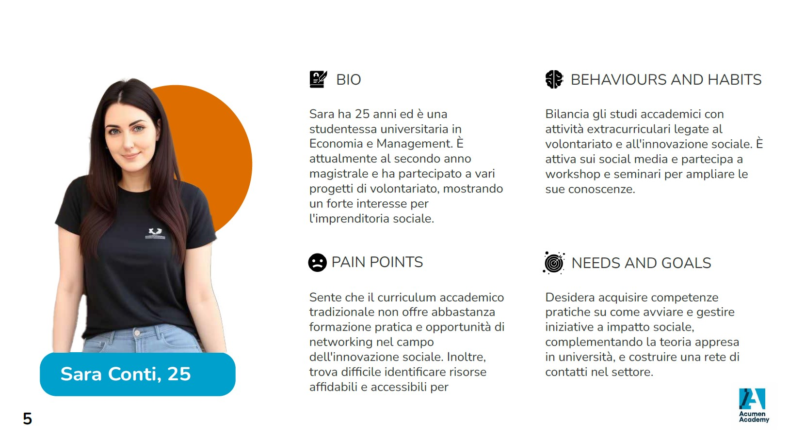
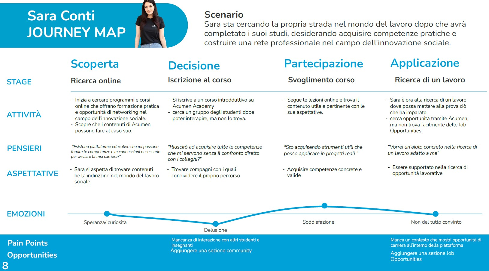
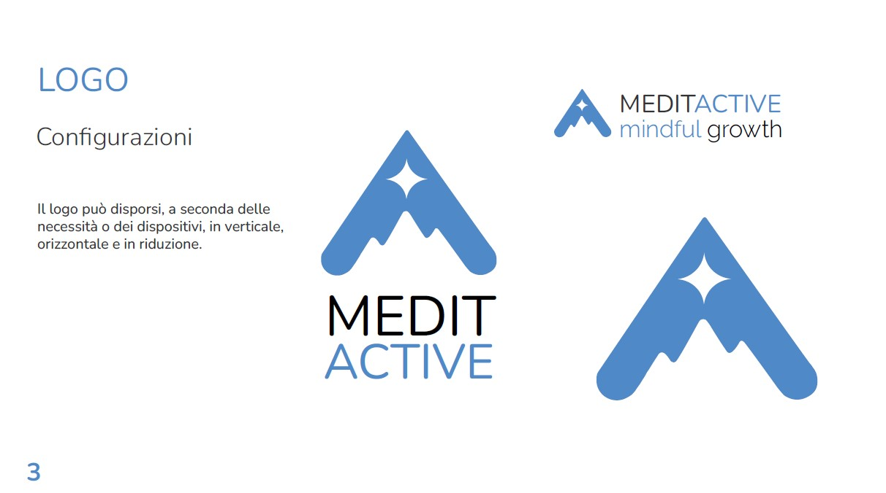
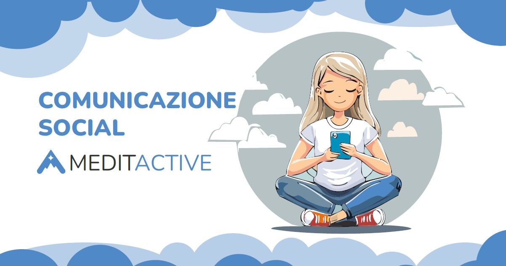
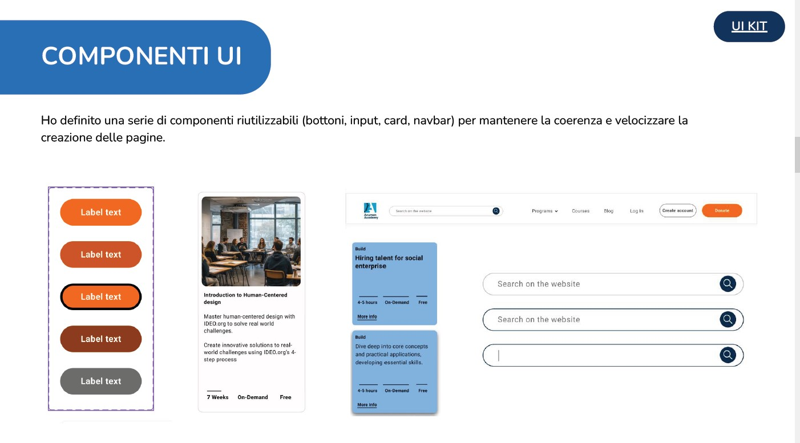

Portfolio Completo
Analisi, Prototipazione e Sviluppo Front-End (Base) dei miei progetti più significativi.
1. Redesign Sito Web



Obiettivo: Analizzare lo stato attuale del sito e dei suoi utenti, fornendo soluzioni per migliorare la conversione
Fasi di Sviluppo
- Analisi As Is: L'usabilità del sito è stata analizzata attraverso le 10 euristiche di Nielsen.
- Analisi dei competitor: Confronto con piattaforme simili (Amnesty Academy, VIS, ConfiniOnline, INTERSOS Lab).
- Creazione di User Personas: Creazione e analisi di User personas per individuare pain point e aree di miglioramento.
2. Graphic Design per App di Meditazione (Meditactive)



Obiettivo: Definire l'identità visiva completa di una nuova app di meditazione per trasmettere calma e affidabilità.
Deliverables
- Logo Design: Creazione del marchio principale e delle varianti (icona app).
- Palette e Tipografia: Scelta di colori rilassanti e font leggibili per l'interfaccia.
- Iconografia: Sviluppo di un set di icone coerenti per la navigazione in-app.
3. User Interface per Sito di E-learning



Obiettivo: Modernizzare l'interfaccia utente di una piattaforma di corsi online per migliorare l'engagement degli studenti e la chiarezza dei contenuti.
Focus Progetto
- Visual Design: Applicazione di principi di design pulito e accessibile (WCAG).
- Componenti Interattivi: Progettazione di moduli di lezione, quiz e barre di avanzamento.
- Responsive UI: Garanzia di una visualizzazione ottimale su desktop, tablet e mobile.
4. Wireframing Desktop e Mobile


Obiettivo: Strutturare le fondamenta di un'applicazione web complessa attraverso la creazione di wireframe Low-fidelity e High-fidelity.
Attività Svolte
- Architettura Bassa Fedeltà: Schizzi e diagrammi di flusso per definire la disposizione degli elementi.
- Wireframe Ad Alta Fedeltà: Dettagliato posizionamento e interazioni in Figma.
- Priorità Mobile-First: Assicurarsi che la struttura mobile sia funzionale prima di espandere al desktop.